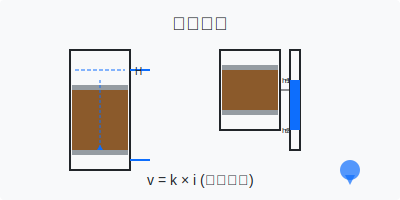
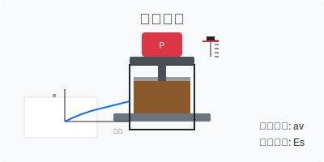
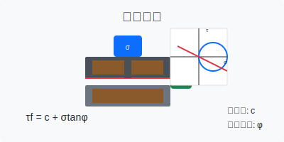

实验教学概述
土力学实验是土力学课程的重要组成部分，通过实验可以直观地了解土的物理力学性质，验证和巩固课堂所学理论知识。本课程设置了5个基础实验项目，涵盖了土的基本物理性质、渗透性、压缩性、抗剪强度和地基承载力等方面。
实验项目列表
实验一：土的物理性质试验
基础实验
2学时
通过试验测定土的含水率、密度、比重、颗粒级配等基本物理性质指标。掌握试验方法和数据处理技能，理解土的三相组成及其相互关系。
- 学习土样制备和试验设备使用
- 掌握物理性质指标的计算方法
- 理解土的三相图及其工程意义

实验二：渗透试验
基础实验
2学时
通过常水头和变水头渗透试验测定土的渗透系数，了解影响渗透性的因素。验证达西定律的适用条件，掌握渗透系数的计算方法。
- 学习渗透试验设备的安装和调试
- 掌握常水头和变水头试验方法
- 理解渗透系数的工程意义

实验三：压缩试验
基础实验
3学时
通过室内压缩试验测定土的压缩性指标，绘制压缩曲线和计算压缩系数、压缩模量等参数。理解土的压缩特性及其工程影响。
- 学习压缩仪的操作和使用
- 掌握压缩试验数据处理方法
- 理解压缩指标的工程应用

实验四：直剪试验
基础实验
2学时
通过直剪试验测定土的抗剪强度指标（粘聚力和内摩擦角）。理解莫尔-库仑强度理论，掌握抗剪强度试验方法和数据处理。
- 学习直剪仪的操作和使用
- 掌握快剪、固结快剪试验方法
- 理解抗剪强度指标的工程应用

实验五：地基承载力试验
基础实验
2学时
通过平板载荷试验测定地基土的承载力特征值和变形模量。掌握地基承载力的确定方法，理解地基破坏模式及其工程意义。
- 学习平板载荷试验设备的安装和调试
- 掌握加载和观测方法
- 理解地基承载力特征值的确定方法